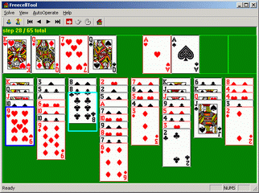

Download FreecellTool 2.3 Download FreecellTool2.1 Email support

FreecellTool is a tool to help you solve any freecell game. It automatically catches the game you are playing, solve it and show the solution. It can operate on the freecell program automatically.
v2.3 features:
Now work correctly on win7. No longer support new freecell game come with Win7 &later, use attached freecell game from WinXP instead(Press F3).
v2.1 features:
Enhanced solve algorithm more than 3 times faster than old version. It will not become slower while lots of states has been searched. If you set "max search states number" in option to a large number, the tool can handle any puzzle ID. For example, It proves that "puzzle No.-2" has no answer in 5 minutes on my P4 CPU.
Now the tool can generate puzzle directly. The first 1,000,000 is the same as Microsoft's game. This can save a lot of time while doing batch solve. You can see what the puzzle looks like if its ID is out of Microsoft's game ID range.
Now support "retry" in batch solve. This will help if you want to go through a large range of game ID.
For detail information, please see "Readme" file.